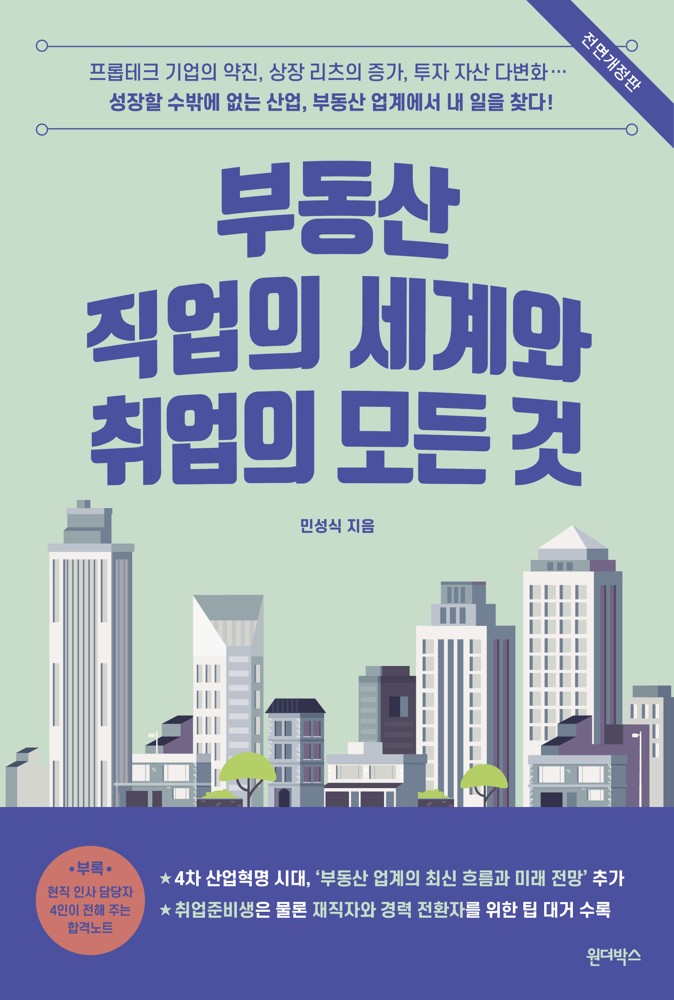

부동산 직업의 세계와 취업의 모든 것
민성식 지음


2020.07.24. 출간 / 368쪽 / 145*215mm / 무선 / 경제경영
부동산 직업을 꿈꾼다면 꼭 읽어야 할 필독서
현직 전문가가 쓴 국내 유일의 부동산 직업 안내서가 돌아왔다!
최근 인공지능과 자동화 기술의 발달로, 앞으로 사라질 직업 가운데 부동산 중개인이 꼽히곤 한다. 하지만 부동산 중개인은 다양한 부동산 직업 중 하나일 뿐이며, 부동산 직업은 없어지는 게 아니라 다른 형태로 진화하고 있다. 인공지능이 대신할 수 없는 대체투자 전문가, 기술과 융합한 프롭테크 분야, 꾸준히 성장세를 보이고 있는 부동산 리츠 등 여전히 부동산 산업의 발전 가능성은 무궁무진하며, 이에 따라 직업에 대한 새로운 수요도 늘어날 것이다.
《부동산 직업의 세계와 취업의 모든 것》은 현직 전문가인 저자가 상업용 부동산 업계의 큰 그림을 보여 주며 독자들을 구체적인 부동산 직업의 세계로 안내하는 책이다. 부동산 관련 직업에는 어떤 것들이 있으며 실제 어떤 일을 하고 있는지, 채용은 어떻게 이뤄지고 있는지, 연봉은 어느 수준인지, 해당 직종에 지원하려면 무엇을 준비해야 하는지 등을 생생한 현장의 언어로 들려준다.
2017년 출간된 책을 대폭 보완한 이번 전면개정판에서는 급변하는 부동산 업계의 최신 흐름을 짚어 보고 부동산업의 미래를 전망하는 내용을 더하고 있을 뿐 아니라, 부동산 업계로 진입하려는 사람들을 위한 정보 또한 더욱 알차게 구성했다. 부동산 업계 취업을 준비하는 이들을 위한 세세하고 구체적인 정보는 물론, 재직자를 위한 팁과 타 업종에서 전환하려는 전직자를 위한 조언까지 아낌없이 담았다. 특히 부동산 산업 각 분야 전문가 10인의 인터뷰와 부동산회사 인사 담당자 4인의 인터뷰를 수록하여 정보의 밀도를 높였다. 부동산 분야의 직업을 모색하는 이에게 이 책은 더없이 훌륭한 길잡이가 될 것이다.